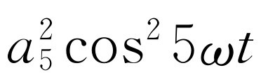

第50章 谐波
§50-1 乐音
据说毕达哥拉斯（Pythagoras）曾经发现如下事实：两根相似的弦处于同样的张力下，只是长度不同，当它们同时发声时，如果 两根弦的长度之比为两个小整数之比，则所发出的声音是悦耳的。如果两根弦的长度为1与2之比，则这两根弦发出的声音相当于音乐中的八度。如果两根弦的长度为2与3之比，则相当于C到G之间的音程，称之为五度音程。一般认为这些音程是“悦耳”的和音。
毕达哥拉斯对于他的这一发现感受如此之深，因而把它作为一个学派的基础——人们称之为毕达哥拉斯派——这个学派对数字的巨大威力有着神秘的信仰。他们还相信，在行星（或“天体”）方面也会找到类似的现象。我们有时听到“天体音乐”这样的说法，它的意思就是在行星轨道之间或者在自然界中其他事物之间会存在数字关系。人们通常认为这只是希腊人的一种迷信。但是，这种迷信与我们自己对定量关系所表现的科学兴趣是这样的大不相同吗？除了几何学以外，毕达哥拉斯的发现是关于自然界中存在数字关系的第一个例子。突然发现自然界中确实 包含简单的数字关系这件事肯定令人深感惊奇。通过简单的长度测量，我们就能对表面上看来与几何学毫无关系的某种事情作出预言——产生悦耳的声音。人们从这一发现可以引申出这样一点：算术和数学分析或将成为了解自然界的良好工具。现代科学的成果证实了这个观点。
毕达哥拉斯只能通过实验观察来得到他的发现。然而这个重要方面似乎并未给他留下深刻的印象。如果不是这样的话，那么物理学就会开始得更早一些（回顾别人已经做过的事情，并且判断他在当时应该 怎么做总是很容易的）。
我们不妨讲一下这个非常有趣的发现的第三方面，即这一发现与发出悦耳声音 的两个音调有关。我们不妨自问，在关于为什么 只有某些声音是悦耳的这一点上，我们 是否比毕达哥拉斯了解得更多？在今天，美学的一般理论未必比毕达哥拉斯的时代更进步。希腊人的这个发现包括三个方面：实验，数学关系和美学。物理学只是在前面两个方面取得了巨大的进步。在本章中将要论述我们今天对毕达哥拉斯发现的认识。
在我们听到的声音中，有一种我们称之为噪声 。噪声和鼓膜的一种不规则振动相对应，这个振动是由鼓膜附近的某个物体的不规则振动所引起的。如果我们画一个图来表示作用在鼓膜上的空气压力（及由此产生的鼓膜位移）对时间的函数关系，那么，和噪声相对应的曲线大致如图50-1（a）所示（该图所示的噪声大致相当于一个踏脚声）。音乐的 声音具有不同的性质。音乐的特征是存在着或多或少持续音 ——或“律音”（当然，乐器同样会产生噪声）。这种乐音可以像按下钢琴琴键时那样，持续一个较短的时间，也可以像长笛演奏者吹奏一个长音调那样，几乎一直持续下去。
图50-1 压力与时间的关系
（a）噪声；（b）乐音
从空气压力的观点来看，律音的特征是什么？律音和噪声的差别在于它的图形具有周期性。空气压力随时间变化的曲线呈现出高低不平的形状，而且这个形状不断重复出现。图50-1（b）表示与一个乐音相对应的压力-时间函数。
通常音乐家是根据响度、音调和“音色”这三个特性来谈论乐音的。已经发现“响度”对应于压力变化的大小，“音调”对应于基本压力函数重复一次所需的时间（“低”音的周期比“高”音的周期长），乐音的“音色”与我们对两个相同响度和相同音调的律音之间仍能听得出其差别有关。双簧管、小提琴或女高音，即使当它们以同一音调发声时，我们仍能一一分辨出来。音色与重复的图样的结构有关。
现在我们来考虑由弦的振动所产生的声音。如果我们拨一下弦，先把它拉向一边，然后放开，其后的运动将由我们所产生的波的运动来决定。我们知道，这些波将向两个方向传播，并分别被两端反射。它们将来回运动很长一段时间。然而不管这个波有多么复杂，它总是重复自身。重复的周期恰好等于这个波传播整整两个弦长所需要的时间，因为这段时间正是任何一个波一经开始后被两端反射，回到出发点，再沿着原来的方向传播所需的时间。无论波在开始时向哪一个方向传播，其所需要的时间都是一样的。因此，弦上的各点经过一个周期后都将回到它原来的位置，再经过一个周期，又将回到它原来的位置，如此一直重复下去。它所产生的声波也必定同样地重复。这样我们就懂得了为什么拨一下弦会产生乐音。
§50-2 傅里叶级数
在前一章中，我们讨论了另一种考察振动系统运动的方法。我们知道弦有各种固有振动模式，而且对任何一种由起始条件所造成的特定振动，都可以看成是由一些同时振动的固有模式以适当的比例组合而成的。对弦来说，我们发现其振动的简正频率为ω 0 ，2ω 0 ，3ω 0 ，…。所以，一根被拨动的弦，其最一般的运动是由频率为基频ω 0 、二次谐频2ω 0 、三次谐频3ω 0 等等正弦振动组成的。基波模式每经过一个周期T 1 重复一次，T 1 =2π /ω 0 。二次谐波模式每经过一个周期T 2 重复一次，T 2 =2π /（2ω 0 ）。当然它每经过T 1 =2T 2 ，即两个周期，也 照样会重复。同样，三次谐波模式经过T 1 的时间，即它的三个周期，也会重复一次。我们又一次看到了，为什么一根被拨动的弦，会按照周期T 1 重复它的全部图样。它产生一个乐音。
我们一直都在谈论弦的运动。然而，声音 是空气的运动，它是由弦的运动产生的。因此，空气的振动也一定是由同样的谐波组成的——不过我们不再考虑空气的简正模式。同时，各谐波在空气中的相对强度可以和在弦中的不同，特别是如果弦是通过共鸣板和空气耦合的。不同的谐波对空气耦合的效率不同。
如果我们用f （t ）表示一个乐音［如图50-1（b）所示］的空气压力与时间的函数关系，那么我们预期，可以把f （t ）写成若干个像cos ωt 这样的时间简谐函数之和——对每个谐频都有一个这样的函数。设振动周期为T ，则基波角频率为ω =2π /T ，谐波角频率为2ω ，3ω ，等等。
这里有一点略为复杂一些。也就是对所有的频率来说，我们预期各个频率的初相未必全都相同。因此，应该用像cos（ωt +φ ）这样的函数。然而，如果对于每一 频率都以正弦和余弦两函数代替，就会比较简单。我们记得
cos（ωt +φ ）=（cos φ cos ωt -sin φ sin ωt ）.（50.1）
因为φ 是常数。所以频率为ω 的任何 正弦振动，都能写作一个含cos ωt 的项与另一个含sin ωt 的项之和
由此得出：周期为T 的任何 函数f （t ）都可写成下面的数学形式
f （t ）=a 0 +a 1 cos ωt +b 1 sin ωt +a 2 cos 2ωt +b 2 sin 2ωt +a 3 cos 3ωt +b 3 sin 3ωt +…（50.2）
式中ω =2π /T ，a 和b 等均为常数，它们表明各个分振动在振动f （t ）中所占的分量。我们在式中还加了“零频率”的项a 0 ，因此我们的式子具有充分的普遍性，虽然乐音的a 0 通常为零。这一项表示声压的平均值（也就是“零”级）的移动。有了它上式就能适用于任何情况。等式（50.2）概括地表示在图50-2中（谐函数的振幅a n 和b n 一定要适当地选择。图中画的只是大致情形，并没有规定任何特定的尺度）。级数式（50.2）称为f （t ）的傅里叶级数 。
我们已经讲过，任何 周期函数都能这样组成。现在应把这句话更正为：任何声波或我们在物理学中通常遇到的任何函数，都能用这样的和组成。数学家能创造出不能由简谐函数组成的函数——例如一个具有“反扭”的函数，因此对于某些t 值它有两个数值！这里，我们不必去为这类函数操心。
§50-3 音色与谐和
现在我们能够讲述是什么决定了乐音的“音色”了。这就是各种谐波的相对量——a 和b 之值。只含有基谐波的音是“纯音”。含有许多强谐波的音称为“重音”。小提琴和双簧管产生的谐波比例不同。
如果把几个“振荡器”与扩音器联接起来，就能“制造”出各种不同的乐音（一个振荡器通常产生近乎纯粹的简谐函数）。我们应选择那些频率为ω ，2ω ，3ω ，…的振荡器。然后通过调节各个振荡器的音量控制，我们就能随意加进任何量的各谐波——由此产生不同音色的乐音。电风琴就是大致以这种方法工作的。“键”是选择基音振荡器的频率的，“音栓”是控制谐波相对比例的开关。按动这些开关就能使电风琴发出像长笛、双簧管或小提琴的声音。
有趣的是，产生这种“人造”乐音，对每一频率只需要一个振荡器——对正弦和余弦分量不必采用各自的振荡器。耳朵对于谐波的相对相位并不很敏感。它主要注意各频率的正弦和余弦部分的总体 。我们的分析已经超过了解释对音乐的主观 看法所需的精确性。然而，传声器或者其他物理仪器的响应确实取决于相位，处理这种情况时就需要我们这种完整的分析。
语音的“音色”也确定了我们在语言中辨认出的元音的声音。口腔的形状决定了口腔内空气固有振动模式的频率。由声带所发出的声波使其中的一些模式发生振动。这样就会使声音中某些谐波的振幅相对于其他的振幅有所增加。当我们改变口腔的形状时，又会有不同频率的谐波占优势。这些效应说明了“e-e-e”音和“a-a-a”音的区别。
我们都知道，无论是以高的还是低的音调来念（或唱）某个元音（例如“e-e-e”），“听起来”仍然“像”同一个元音。根据我们所描写的机制，可以认为在口腔中发“e-e-e”音时的形状会使某些特殊 频率得到加强，而且这些频率不会 随着我们音调的改变而改变。所以当我们改变音调时，重要的谐波与基波之间的关系——即“音色”——也随之而改变。显然，我们并不是凭着特定的谐波关系来辨别语言的。
现在我们应该怎样来评论毕达哥拉斯的发现呢？我们知道如果两根相似的弦的长度之比为2∶3，则振动的基频之比为3∶2。但是当它们一起发声时，为什么会听起来悦耳呢？或许我们应该从谐波的频率中去寻找线索。那根短弦的二次谐波与长弦的三次谐波的频率相等 （我们可以很容易证明或相信，一根被拨动的弦能产生一些很强的最低的谐波）
也许我们应该作出如下的规定：当一些律音具有相同频率的谐波时，它们听起来是和谐的。当一些律音的较高次谐波的频率相近，但其差又足以产生快拍时，听起来就不那么和谐了。为什么拍音听起来不舒服而较高次谐波的同音却听起来悦耳？对这些我们还不知道怎样去解释或描述。我们不能根据这方面知识说什么声音好听 或者气味应该好闻 。换句话说，我们对这一问题的理解并不比它们是同音听起来就悦耳这一说法更全面。它不允许我们作出比音乐中的和谐性更多的推论。
我们可以很容易地利用钢琴作几个简单的实验来验证上述谐波关系。把靠近钢琴键盘中央的三个相继的C依次记作C、C′和C″，而把恰在其上方的G记作G、G′和G″。则它们的相对基频为

这些谐波关系可以用下列方法演示。假定我们缓慢地 按下C′键——这样不会发出声音，但却能使消音器升起。然后使C发声，以便产生它本身的基谐波和 一些二次谐波。C的二次谐波会使C′的弦振动。如果我们现在放开C键（C′键仍然按着），消音器就会使C弦停止振动，同时我们听到（隐约地）音调C′渐渐地消失。利用类似的方法，C的三次谐波能使G′弦振动。或者C的六次谐波（现在已经相当的弱了）能引起G″的基频振动。
如果不出声地按下G键，然后再使C′发声，得到的结果略有不同。C′的三次谐波和G的四次谐波相对应，因此只有 G的四次谐波被激发。如果我们靠近去听，就能听到G″的声音，它比我们按着的G音高出两个八度！我们可以很容易地想出许多种组合来玩这个游戏。
顺便提一下，我们可以用下述条件来确定大调音阶：大三和弦（F-A-C）、（C-E-G）和（G-B-D）各表示一系列频率比值为4∶5∶6的音。这些比值——加上一音阶（C-C′，B-B′等）的频率比值为1∶2这个事实——决定了“理想”情况（或所谓“正确的音调”）的全部音阶。对于像钢琴等键盘乐器，一般都不 按照此法调音，而是有点“不老实”，以至于对于所有可能的起始音，其频率都近似于正确。这种调音方法称为“按平均律调音”，其做法是：把一音阶（频率之比仍是1∶2）分为12个相等的音程，每个音程频率的比值是21/12 。五度音程频率的比值不再是3/2而是27/12 =1.499，显然，对于多数人的耳朵，这两者是足够近的了。
我们已经叙述了用谐波的符合来表示谐和的规则。然而这个符合是否就是两个音调和谐的原因 呢？有人已经断定，两个纯 音——经过精心调制而不带谐音的音——当它们的频率比值等于或者接近于预期的比值时，并不能给人以谐和或者不谐和的感觉 （这种实验是很难进行的，因为很难产生纯音，在以后我们将会明白为什么）。我们至今仍不能确定，当我们判定某个声音好听时，我们的耳朵是在与谐波匹配还是在做算术？
§50-4 傅里叶系数
现在让我们回到这一概念，即任何律音——就是有周期性 的声音——都能用谐波的适当组合来表示。我们想说明怎样才能求出每个谐波的需要量。如果我们已知所有的系数a 和b ，当然能很容易利用式（50.2）计算f （t ）。但现在的问题是，如果已知f （t ），我们怎样才能求出各种谐波项的系数（按照食谱做蛋糕是容易的，但是如果给我们一个制好的蛋糕，我们能写出它的制法吗）？
傅里叶发现这个问题其实并不很难。a 0 这一项当然是容易求得的。我们已经讲过，它就是f （t ）在一个周期内（从t =0到t =T ）的平均值。我们很容易看出事实上确实如此。正弦和余弦函数在一个周期内的平均值为零。在两个、三个或者任何整数个周期内的平均值也为零。因此，除了a 0 以外，式（50.2）右边各项的平均值全部为零（要记得，我们必须取ω =2π /T ）。
由于和的平均值等于平均值的和，所以f （t ）的平均值就是a 0 的平均值。然而a 0 是常数 ，所以它的平均值就等于a 0 。由平均值的定义，我们有
其他系数的计算只是稍微难一些。我们可以用傅里叶发明的诀窍来求出它们。假若在式（50.2）的两边同时乘以某个谐波函数——例如cos 7ωt ，则有
现在 对上式两边求平均值。a 0 cos 7ωt 在时间T 内的平均值与余弦在七个整周期内的平均值成比例。但是它正好是零。几乎 所有其他各项的平均值也都为零 。我们来看一下a 1 项。我们知道在一般情况下
a 1 项可写成
这样就有了两个余弦项，一项在时间T 内有八个整周期，另一项有六个整周期。这两项的平均值均为零。 所以a 1 项的平均值为零。
对a 2 项，我们可以得到a 2 cos 9ωt 和a 2 cos 5ωt ，其中每一项的平均值也为零。对a 9 项，我们可以得到cos 16ωt 和cos（-2ωt ）。但cos（-2ωt ）等于cos 2ωt ，所以这两项都以零为平均值。很清楚，除了 a 7 项之外，所有 a 项的平均值均为零。对a 7 项有
零的余弦是1，它的平均值当然也是1。因此我们得到了这样的结果：即式（50.4）中所有的a 项平均值为a 7 /2。
至于b 项就更加容易了。当我们用任何一个余弦项，例如cos nωt 去乘两边时，我们可以用同样的方法证明所有 的b 项其平均值均为零。
我们看到傅里叶的“诀窍”起着筛子的作用。当我们用cos 7ωt 去乘两边然后求平均值时，除了a 7 项之外，所有其他各项都去掉了，并且得到
或
我们留给读者自己去证明，系数b 7 可以通过将式（50.2）的两边同乘以sin 7ωt 后求平均值而求得。其结果是
我们预期对7是正确的，对一切整数也都正确。因此可以把我们的证明归纳为下面比较优美的数学公式。如果m 和n 都是不等于零的整数，而且ω =2π /T ，则
在前面几章中用指数符号来表示简谐运动是很方便的。我们用指数函数的实数部分Reei ωt 来代替cos ωt 。在本章中我们已经应用了正弦和余弦函数，因为这样使证明也许较为清楚。然而式（50.13）的最终结果可以写成下面简洁的形式
 （50.17）
（50.17）
式中 是复数a n -ib n （包括b 0 =0）。如果我们希望始终都用同样的符号，那么我们还可以写出
现在我们知道怎样把一个周期波“分解”成它的谐波分量。这个过程称为傅里叶分析 ，分解出来的各个独立项称为傅里叶分量。然而我们还没有 证明，一旦找出所有的傅里叶分量，并把它们都加起来，的确就回复到f （t ）。数学家们已经证明，对于大多数类型的各种函数，也就是事实上对于物理学家感兴趣的所有函数，如果能够积分的话，就能回复到f （t ）。不过有一个小小的例外。如果函数f （t ）不连续，即f （t ）突然由一个值跳变到另一个值，那么傅里叶和就会在断点处得到一个介于高值与低值中间的值。因此，如果我们有一个奇异的函数f （t ）=0，0≤t ≤t 0 及f （t ）=1，t 0 ≤t ≤T ，那么傅里叶和在各处的值都与原函数相同，但是t 0 处除外 ，在该处傅里叶和是1/2而不是1。不管怎样，坚持说一个函数在直至趋近于t 0 时 应该是零，而在t 0 时 又应该是1，是很不符合物理学原则的。所以也许我们应该对物理学家作这样一个“规定”：任何不连续函数（这只能是真实 的物理函数的一个简化）在不连续点的值应该定义为两个不连续值的中间值。这样任何这类函数——具有任何有限数目的这类跳变的函数——和所有其他物理上感兴趣的函数一样，都可以由傅里叶和正确地表示出来。
我们建议读者做一个练习，确定图50-3所示函数的傅里叶级数。因为这一函数无法用一个明显的代数形式来表示，因此不能照通常的方法从零到T 范围进行积分。然而如果把积分分成两个部分：一部分从零到T /2（在这个范围中f （t ）=1），另一部分从T /2到T （在这个范围中f （t ）=-1），那么积分就容易求了。其结果是
式中ω =2π /T 。于是我们发现这个具有特殊相位的方波只含有奇次谐波，而且它们的振幅和频率成反比。
现在我们来检验式（50.19）是否会回复到某个t 值的f （t ）。我们选择t =T /4，即ω =π /2，有
这个级数 [1] 的值是π /4，从而我们得到f （t ）=1。
§50-5 能量定理
波中的能量与其振幅的平方成正比。对于一个形状复杂的波，在一个周期内的能量与 成正比。我们也可以把这个能量与傅里叶系数联系起来
当我们展开括号内各项的平方时，就会得到所有可能的交叉项，如a 5 cos 5ωt ·b 7 sin 7ωt 。但是，上面［式（50.11）和（50.12）］我们已经证明，所有这些项在一个周期内的积分都为零，所以只剩下了像 这种平方项。任何余弦平方或正弦平方在一个周期内的积分都等于T /2，所以我们得到
我们把这个式子称为“能量定理”，它表明波中的总能量正好等于它的全部傅里叶分量的能量之和。例如，把这个定理应用到级数式（50.19）中，因为［f （t ）］2 =1，所以得到
由此我们知道奇数倒数的平方和等于π 2 /8。同样，采用首先得到一个函数x 2 的傅里叶级数，再应用能量定理的方法，我们可以证明1+1/24 +1/34 +…等于π 4 /90，这一结论我们在第45章中曾经用到过。
§50-6 非线性响应
非线性效应是谐波理论中的一个重要现象。由于它在实践方面的重要作用，最后还得讲一讲。至今我们都是假定所讨论的系统是线性的，也就是假定力的响应，例如位移或加速度始终正比于力，或者假定电路中的电流正比于电压，等等。现在我们要讨论的是不存在严格成比例的情况。设想有一个装置，它的响应（我们称为t 时刻的输出x 输出 ）由t 时刻的输入x 输入 来决定。例如，当x 输入 为力时，x 输出 就是位移。或者当x 输入 为电流时，x 输出 就是电压。如果该装置是线性的，则
x输出 （t ）=Kx 输入 （t ），（50.24）
式中K 是常数，与t 和x 输入 无关。但是，如果该装置并不是严格线性的，而只是近似于线性，那么可写成
式中ε 与1相比是个小量。上述线性和非线性响应如图50-4所示。
图50-4 线性和非线性响应
非线性响应在实用上有几个重要的结果。现在来讨论其中的一部分。首先考虑当一个纯音输入时会发生什么现象。令x 输入 =cos ωt 。若画出x 输出 与时间的函数曲线，则得到如图50-5所示的实线。图中的虚线表示线性系统的响应，以供比较。可以看到这个输出不再是余弦函数。这条曲线的顶部较为尖锐，底部则较为平坦。我们说这个输出畸变 了。然而，我们知道这种波不再是一个纯音，它具有谐波。我们能够求出这些谐波是什么。把x 输入 =cos ωt 代入式（50.25），得
x输出 =K（cos ωt +εcos2 ωt ）.（50.26）
图50-5 一个非线性装置对输入cos ωt 的响应，图中虚线表示线性响应，以供比较
由等式 得
这一输出不仅有一个基频的分量，即输入中出现的频率，而且还包含它的二次谐波。此外，还有一个常数项K （ε /2），它与图50-5所示的平均值的移动相符。产生平均值移动的过程叫做整流 。
非线性响应能整流并且产生输入频率的谐波。虽然我们所假设的非线性只产生二次谐波，但是，高次非线性——即具有如 和 的项——会产生比二次谐波更高的谐波。
由非线性响应引起的另一个效应是调制 。如果我们的输入函数包含两个（或更多个）纯音，那么输出将不仅包含它们的谐波，而且还包含其他频率的分量。令x 输入 =A cos ω 1 t +Bcos ω 2 t ，其中ω 1 和ω 2 不 成谐波关系。除去线性项（即K 乘输入项）外，输出中还有下面的分量
x 输出 =Kε （A cos ω 1 t +B cos ω 2 t ）2 （50.28）
=Kε （A 2 cos2 ω 1 t +B 2 cos2 ω 2 t +2AB cos ω 1 t cos ω 2 t ）.（50.29）
式（50.29）括号中的前两项恰好能化成我们在前面已经得到的常数项和二次谐波项。但括号中的最后一项则是新的。
我们可以用两种方法来考察这个新的“交叉项”AB cos ω 1 t cos ω 2 t 。首先如果这两个频率相差很大（例如，ω 1 远大于ω 2 ），我们可以认为这个交叉项代表一个变振幅的余弦振动。这就是说我们可以这样来看待这个因式
AB cos ω 1 t cos ω 2 t =C （t ）cos ω 1 t ，（50.30）
其中
C （t ）=AB cos ω 2 t .（50.31）
我们说cos ω 1 t 的振幅受到频率ω 2 的调制 。
另一种方法是，把交叉项写成下面的形式
现在我们可以说产生了两个新的 分量，其中一个分量的频率为和 频（ω 1 +ω 2 ），另一个分量的频率为差 频（ω 1 -ω 2 ）。
我们有两种不同的但是等价的方法来观察同一结果。在ω 1 ≫ω 2 的特殊情况下，可以把这两种不同观点这样联系起来：因为（ω 1 +ω 2 ）与（ω 1 -ω 2 ）非常接近，我们预期在它们中间会观察到拍。但这些拍的效果就是以差额2ω 2 的二分之一对平均 频率ω 1 的振幅进行调制 。由此可见，这两种描述是等价的。
归纳起来，我们知道非线性响应会产生这样一些效应：整流，产生谐波，以及调制或产生和频与差频分量。
我们应该注意到所有这些效应（式50.29）不仅正比于非线性系数ε ，而且还正比于两个振幅之乘积——A 2 、B 2 或AB 。因此可以预期这些效应对于强 信号来说比对弱信号更为重要。
我们所描述的这些效应有许多实际应用。首先，相信耳朵对于声音是非线性的。即相信这可以说明下面的事实，对于强音，即使声波中仅包含纯音，我们却有着既听到 它们的谐音，还听 到它们的和频和差频的感觉。
用于放声设备——放大器、扩音器等的组件总具有一些非线性。它们会使声音畸变——产生在原来的声音中不存在的谐波等等。当我们的耳朵听到这些新的分量时就会感到不愉快。正因为如此，所以要把“高保真度”的设备设计得尽量线性（为什么我们对于耳朵 的非线性并不 同样地感到不愉快？或者我们怎么会知道非线性是来自扩音器 中而不是来自耳朵 中？这些至今还不清楚）。
非线性是非常必需 的。事实上，在无线电发射和无线电接收设备的某些部分，我们有意使它们具有很大的非线性。在调幅发射器中，“声音”信号（频率为每秒若干千周）和“载波”信号（频率为每秒若干兆周）在一个叫做调制器 的非线性电路中结合起来产生调制的振荡，被发射出去。在接收器中，接收信号的各分量被馈送到一个非线性电路中，该电路把调制载波的差频与和频结合起来，重新产生声音信号。
在讨论光的传送时，我们假设电荷的感应振荡正比于光的电场——即线性响应。这确实是一个很好的近似。只是在最近几年，人们设计出能产生足够强度的光的光源（激光器）后，才能观察到光的非线性效应。产生光频谐波现已成为可能。当一束强的红光通过一块玻璃时，微弱的蓝光——红光的二次谐波——出现了。